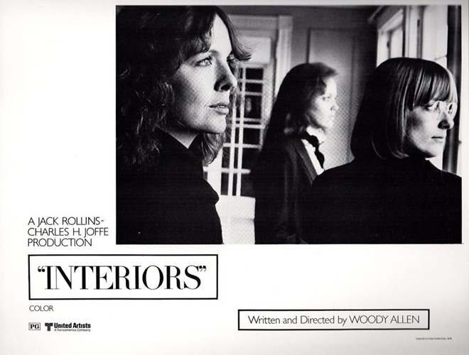
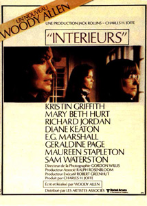
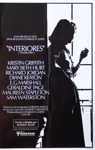
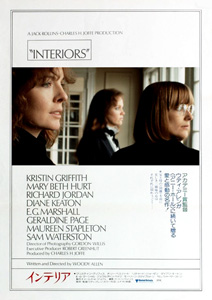

|
||||
Interiors (1978) |
||||
 |
||||
Director |
- |
Woody Allen | ||
Producer |
- |
Charles H. Joffe | ||
Screenplay |
- |
Woody Allen |
||
Cinematography |
- |
Gordon Willis | ||
Production Designer |
- |
Mel Bourne | ||
Costume Designer |
- |
Joel Schumacher | ||
Editor |
- |
Ralph Rosenblum | ||
Cast |
||||
Eve |
- |
Geraldine Page | ||
Renata |
- |
Diane Keaton | ||
Joey |
- |
Mary Beth Hurt | ||
Flyn |
- |
Kristin Griffith | ||
Frederick |
- |
Richard Jordan | ||
Arthur |
- |
E.G. Marshall | ||
Pearl |
- |
Maureen Stapleton | ||
Mike |
- |
Sam Waterston | ||
Plot |
||||
An empty house. Precious vases on side tables. A window, behind which a sea beach becomes visible. Silence and the icy atmosphere of cultivated civility. 60-year old Eve has created a harmonious home for her husband and three daughters. Everything seems furnished for the long term. Eve's 63 year old husband, Arthur, quietly announces to his family that he wants a change in his life, and that he is taking a trip to Greece by himself. The daughters are stunned. Eve does not want to admit to her husband's vacation. The film explores how the three daughters cope with their parents' obvious seperation. Joey lives together with a political intellectual. Renata is unhappily married to a frustrated writer. Flyn is an actress disappointed by her lack of perceived success. Arthur returns from Greece and confesses to Eve that they should seperate. Eve breaks down. She tries to take her own life, however in last minute she is saved. In the hospital she recovers physically, not the mental trauma is obvious. Arthur does not change his mind. He soon announces that he has become acquainted with another woman, the life-thirsty Pearl from Florida. Arthur is so enamoured with Pearl that he marries her. The daughters attend the wedding, however Joey is the most reluctant. She feels an irrational solidarity her mother, despite their own broken relationship. In the family house, the wedding takes place, and all eventually participate. Pearl appears to the daughters as a naive person, but friendly and cordial. The daughters nevertheless cannot accept her. The symbolic break happens when Pearl, who is dancing, knocks over ove of Eve's vases. The harmony is broken. |
||||
Filming |
||||
The visual and verbal styles of the film are similar to that of Ingmar Bergman. Critics have noted the apparent borrowing of visual techniques used by other European directors such as Antonioni, Fellini and Truffaut. In the 'European' style, the film is subdued and features a considerable amount of dialogue. Allen's most serious film to date. Allen's own fears about the film's reception are recounted in a biography of Allen by Eric Lax, where he quotes Ralph Rosenblum, the film's editor: "He [Allen] managed to rescue Interiors, much to his credit. He was against the wall. I think he was afraid. He was testy, he was slightly short-tempered. He was fearful. He thought he had a real bomb. But he managed to pull it out with his own work. The day the reviews came out, he said to me, 'Well, we pulled this one out by the short hairs, didn't we?'. Later, while watching the film with an acquaintance, Allen reportedly said "It's always been my fear. I think I'm writing Long Day's Journey into Night and it turns into Edge of Night." Geraldine Page received a BAFTA for "Best Supporting Actress" and was nominated for an Oscar for "Best Actress in a Leading Role". The film received four other Academy Award nominations: two for Allen's screenplay and direction, one for Stapleton as "Best Actress in a Supporting Role" and another for Mel Bourne and Daniel Robert for their art direction and set decoration. Interiors grossed $10.43 million in the US, considered a disappointment and far less than the grosses of most of Allen's previous films. Trivia: Director John Waters has named Interiors as one of his favourite movies. |
||||
Music |
||||
Keepin' Out of Mischief Now |
- |
Tommy Dorsey | ||
Wolverine Blues |
- |
The World's Greatest Jazz Band
|
||
Reviews |
||||
"Allen, whose comedies have been among the cheerful tonics of recent years, is astonishingly assured in his first drama." - Roger Ebert : Chicago Sun-Times "Laughably bad misfire by Allen in Bergman mode." - Ken Hanke : Mountain Xpress |
||||
Additional Artwork |
||||
   |
||||